Vanilla Bean Body Butter
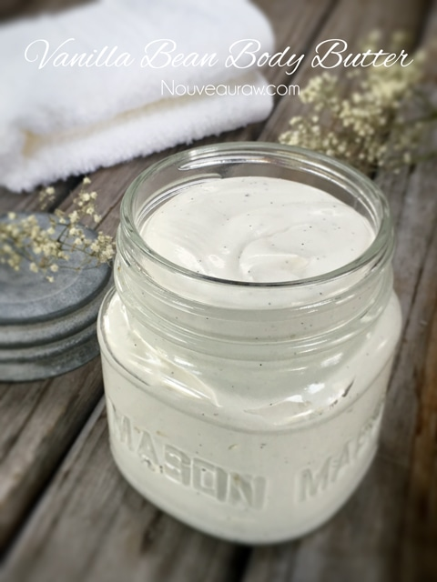
This body butter is light, fluffy, and glides onto the skin. As you rub it in, it initially feels a little more on the oily side than a lotion. However, I find that it soaks in nicely.
Before we get into the ingredients list, I must warn you… you will be tempted (heavily) to lick the spatula while you are scooping it into the jars. It looks so beautifully, silky creamy like it belongs on a cake and in your tummy! Hehe, Therapeutic wise I decided on the following ingredients…
Shea Butter
Shea butter is also known as “Vitamin A Cream.” This is a pretty powerful vitamin for the skin. It aids in the skin’s natural collagen production and helps to protect, as well as nourish the skin to prevent drying. It’s great to help with bug bites, skin allergies, and even frostbite. (source)
Cacao Butter
Cocoa butter is the best salvation for people who have sensitive skin. Cocoa butter moisturizers are good at protecting skin from heat, healing such diseases as eczema and other problems. A cocoa buttercream will definitely help you keep your skin soft and supple.
According to Dr. Axe, “Cocoa butter contains compounds called cocoa mass polyphenols. Research shows that its polyphenols have several positive indicators for skin health, including improved skin elasticity and skin tone, better collagen retention/production, and better hydration.”
Jojoba Oil
This oil works by creating an oily layer on the top of the skin that traps water in the skin. It works on your face, neck, hands, feet, and hair. I have been using jojoba oil for years now as a face cleaner of all things. One wouldn’t think that washing your face oil makes sense, but it works.
It removes dirt, makeup, and bacteria from your face. It’s even safe for cleaning eye makeup, and it’s hypoallergenic. I just put some in the palm of my hands, rub them together and then rub it over my face. I then remove it with a warm washcloth. It is rich in iodine, which fights harmful bacteria growth that leads to breakouts. The antioxidants present in jojoba oil also helps to soothe fine lines, wrinkles, and naturally slow down other signs of aging.
Coconut Oil
Coconut oil is rich in protein which helps keep the skin healthy and rejuvenated, both internally and externally. These proteins also contribute to cellular health and tissue repair. Coconut oil contains Vitamin E, which soothes eczema, sunburn, and psoriasis, and its antiviral and antifungal benefits even help to treat bug bites.
Look for the words “unrefined,” “cold-pressed” or “crude.” This means that the product was extracted with natural methods that don’t overheat the ingredient during the process, thus destroying some of its nutrients.
- 1/4 cup shea butter
- 1/4 cup cacao butter
- 1/4 cup coconut oil
- 1/4 cup organic jojoba oil
- 10-20 drops lemon essential oil
- 1/2 tsp almond extract
- 1 vanilla bean, seeds only
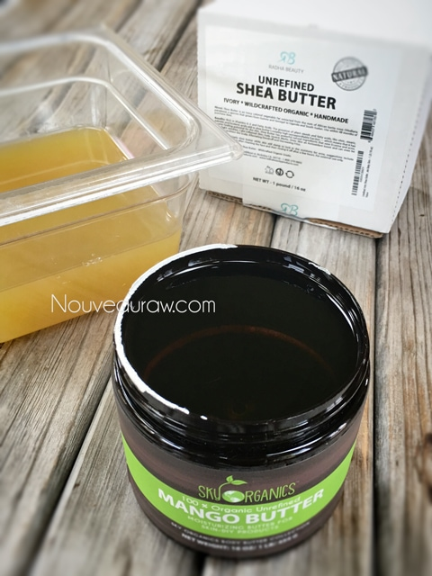
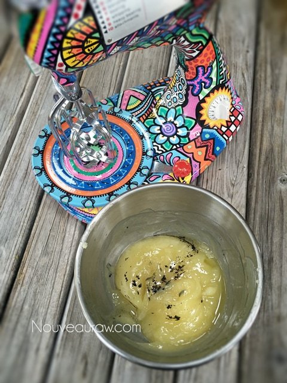
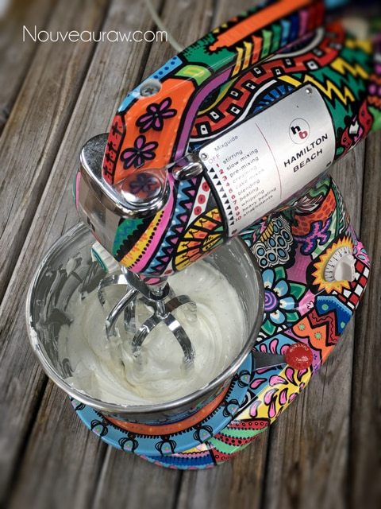
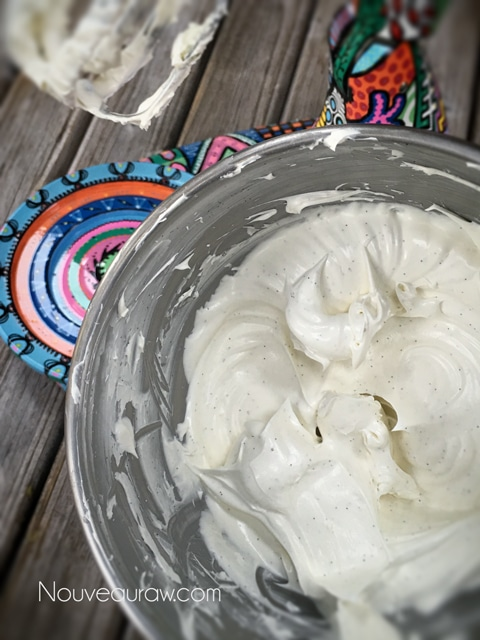
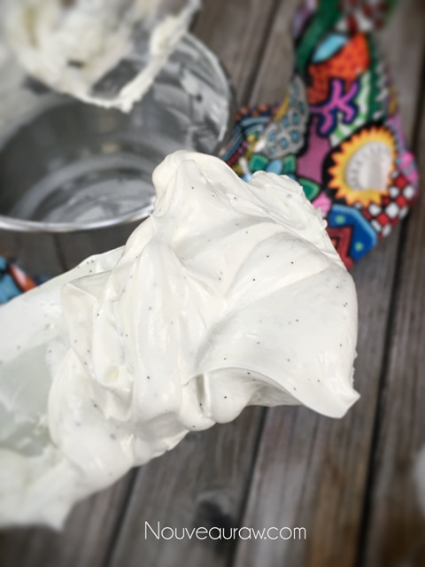
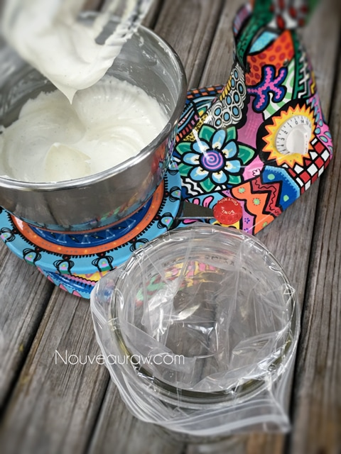
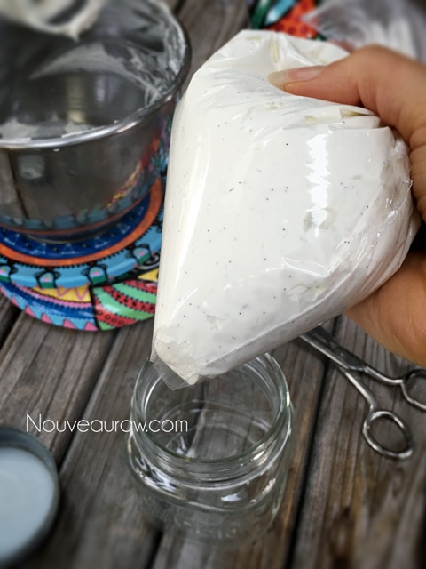
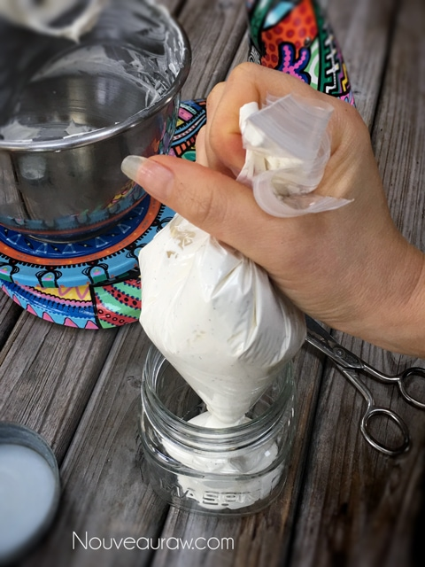
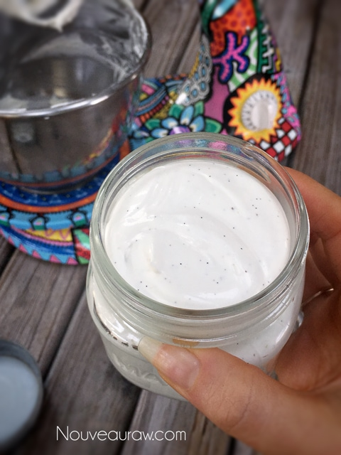
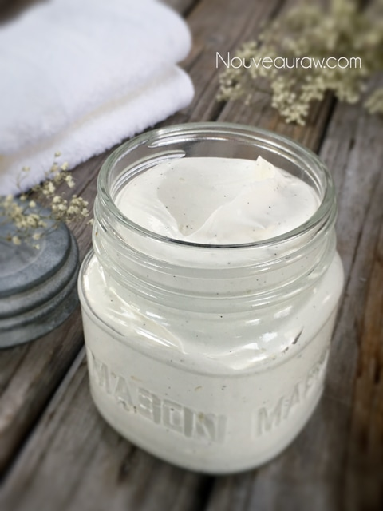
© AmieSue.com